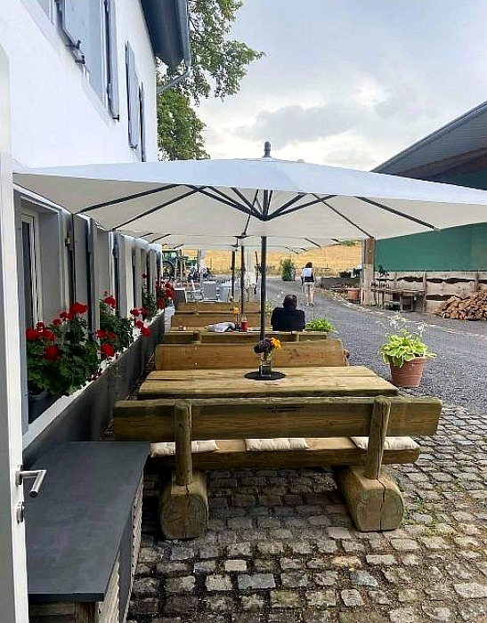
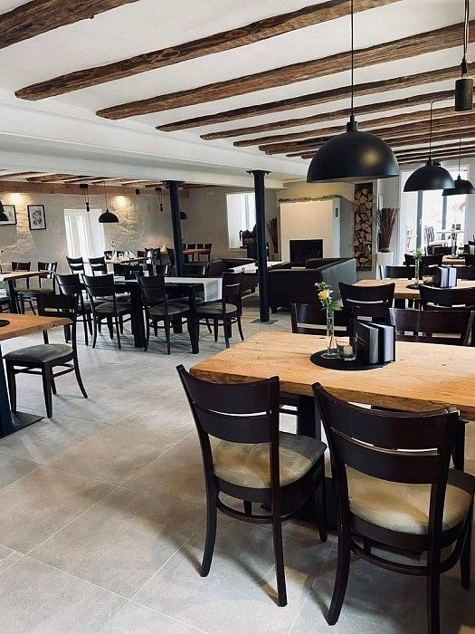

Restaurant & Hofcafé
Regionale Küche, hausgemachte Kuchen und ein Platz, an dem man gerne länger bleibt.
Restaurant entdecken
Ein besonderer Ort zwischen Brauneberg und Burgen – mit regionaler Küche, hausgemachtem Kuchen und Islandpferden.
Die Jungenwaldmühle verbindet familiäre Gastronomie mit langjähriger Leidenschaft für Islandpferde.
